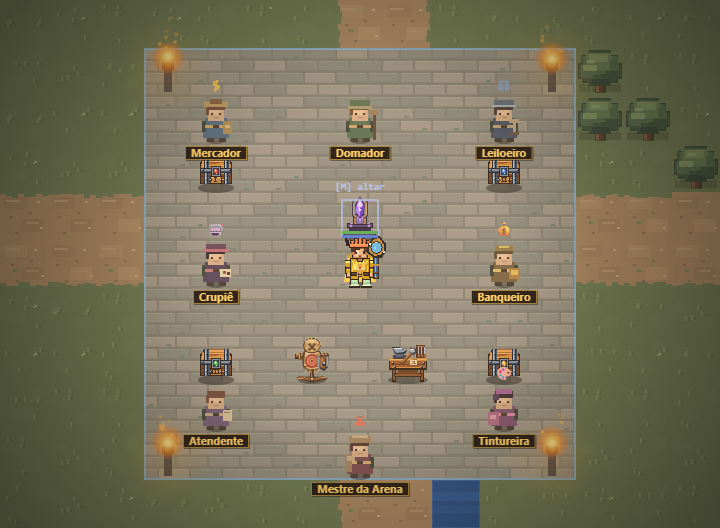
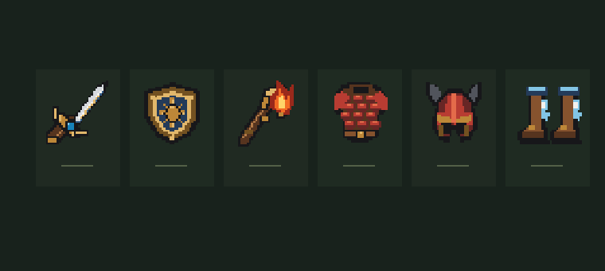

Uma vila.Mil históriaspara viver.
Explore uma vila em arte 2D, enfrente criaturas, evolua seu equipamento e encontre outros jogadores. Grátis, direto no navegador e sem cadastro por e-mail.

Sua história começa pequena. O mundo, não.
A vila, os itens e as criaturas ganharam arte 2D própria. Cada saída traz novos caminhos, encontros e motivos para voltar.
Vá além da vila
Siga missões, encare criaturas e avance pelas Profundezas. A partir do andar 25, há retornos à cidade nos andares de chefe a cada cinco níveis.
Faça seu caminho
Forje equipamentos até +5, inclusive os eternos. Na bancada, encante cada peça com até três bônus próprios.
Encontre sua companhia
Forme uma party, entre em uma guilda e compartilhe a aventura com outros jogadores.

Toda jornada deixa alguma coisa com você.
Monstros podem deixar essências arcanas; chefes sempre deixam. Use-as para encantar uma peça ou trocar um bônus específico, preservando os outros e seu nível de forja.
Entrar no mundoFácil de começar.
Difícil de deixar.
Entre pelo navegador no PC ou no celular. Seu personagem e sua jornada acompanham você.
Crie seu personagem
Escolha um nome e uma senha. Você não precisa informar e-mail para começar.
Encontre a atendente
Comece na vila e fale com a atendente para dar seus primeiros passos.
Explore no seu ritmo
Acompanhe as missões, percorra o mapa e descubra o que existe além da vila.